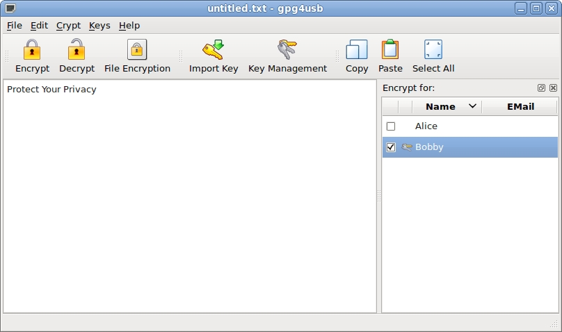

Howto decrypt a text
NOTE: You can only decrypt files, if you have one private key, the file is encrypted for. You can identify the private keys by the "bunch of keys"-image in front of the name in the keylist (in this case Bobby):

There are five steps for encrypting a text. We assume, that Bobby wants to decrypt a text, which is encrypted with his public key.
STEP 1: Copy the text to the textedit-field
First Bobby copies the text to the textedit-field.

STEP 2: Choose key(s)
Secondly he chooses his own key.
STEP 3: Decrypt message
Now Bobby hits the decrypt button to decrypt the text. Alternatively he could use the shortcut Ctrl+D or use the menu crypto->decrypt.
NOTE: You can only decrypt texts, for which you have the private key. The private keys are those, with the key-icon in front of the Name in the keylist.

STEP 4: Enter passphrase
Now Bobby enters the passphrase of his key.

STEP 5: Read the text
Now Bobby can read the encrypted text.

Previous: Encrypt a message | Next: Encrypt a file